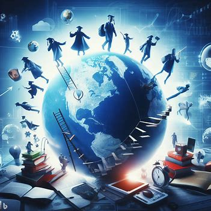

IMPACTO GLOBAL
Educacion en todo el mundo
Para que la educacion de calidad evolucione se tiene que expandir a todo el mundo, entre a mas personas
llegue la educacion de calidad siempre va a ser maejor, porque asi se puede ayudar a muchas personas
y el impacto global va a ser mucho mayor, y si se tiene un impacto positivo la gente va a hablar cada vez mas bien sobre
la importancia de la educacion de calidad.

La eduacion a nivel global puede mejorar cosas como:
-Desarrollo económico: Si un pais es rico en gente con educacion es mas probable que ayuden al pais
con el desarrollo economico ya que los salarios serian mas alto.
-Reducción de la pobreza: La educacion si es bien usada es una gran herramienta para salir de la pobreza,
ya que las personas estudiadas van a tener mas oportunidades laborales y el acceso a los recursos y asi mejorar su calidad de vida.
-Salud y bienestar: Las personas educadas es mas facil que tomen desiciones sabias sobre salud y tambien tienen
tienen acceso a mejores servicios de atención médica y están más capacitados para llevar un estilo de vida saludable.
-Reduccion en la desiguladad social: Aunque suene feo esto es verdad, ya que las personas se burlan de las personas que no han tenido oportunidad de tener una buena educacion,
pero si mejoramos el aspecto de la educacion, ya estas personas seran mas respetadas y tambien ascender en la escala social.
Video de retroalimentacion
pagina web 1
pagina web 2
pagina web 3